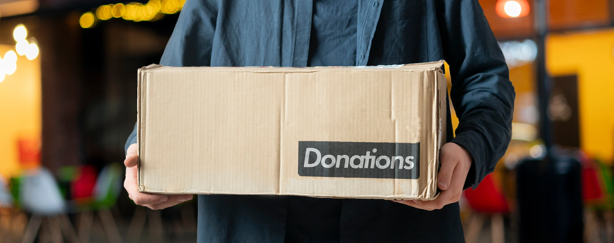
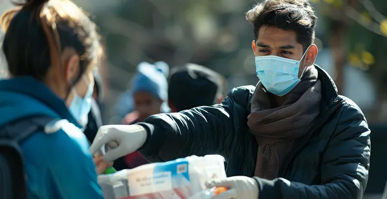
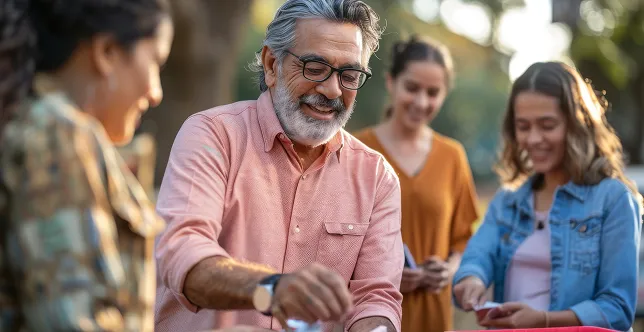
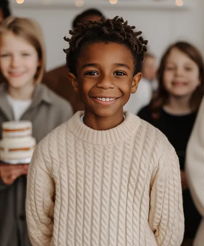
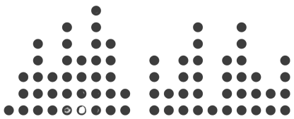
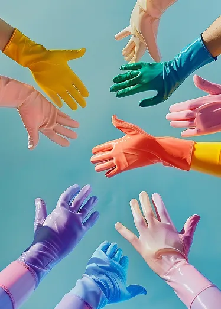
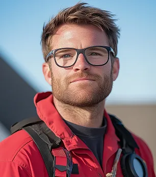

À propos d'KTZ GROUP SAS

Qui sommes-nous
Nous renforçons les communautés en apportant du soutien, en semant l'espoir et en changeant des vies grâce à chaque don que nous recevons.


01. Fournir des ressources essentielles à ceux dans le besoin
02. Organiser des projets portés par les communautés
03. Soutenir l'éducation, la santé, l'alimentation et les soins
04. Permettre aux bénévoles de faire la différence
05. Suivre l'impact et partager de vraies histoires de succès

25+
Projets financés
Nous soutenons et finançons des initiatives audacieuses qui apportent espoir et impact durable aux communautés.
95%
Donateurs satisfaits
Nos donateurs nous font confiance pour transformer leurs contributions en changements concrets, à chaque étape.
50+
Communautés aidées
Grâce à des programmes d'éducation, de santé et de nutrition, nous améliorons des vies et bâtissons des communautés plus fortes.

À propos d'KTZ GROUP SAS
Notre histoire a commencé avec une conviction simple : chaque acte de générosité peut changer une vie. Ce qui n’était au départ qu’un petit groupe de bénévoles animés par la volonté d’aider est devenu un mouvement mondial de compassion et d’espoir. Nous croyons que donner va au-delà de la charité — c’est l’humanité en action. Chaque don, aussi modeste soit-il, a le pouvoir de nourrir une famille, d’éduquer un enfant ou de soulager quelqu’un en crise. Ensemble, nous œuvrons à bâtir un monde où la générosité construit des avenirs et la bienveillance nous unit tous.
200+ Campagnes réussies
Là où la bienveillance et l’espoir se rejoignent
Créer un monde où la compassion rencontre l'action — transformer des vies grâce à chaque don, chaque geste de générosité et chaque moment d'espoir partagé.

- Renforcer les communautés locales
Nous soutenons les familles et enfants défavorisés grâce à l'éducation, la nourriture et les soins de santé, à travers des initiatives communautaires.
- Plateforme de dons de confiance
Chaque contribution a un impact visible et durable — nous veillons à ce que vos dons parviennent vraiment et efficacement à ceux qui en ont le plus besoin.
- Unis pour un changement durable
Nous développons des programmes innovants et durables qui créent une croissance à long terme, des opportunités et de l’espoir pour un avenir meilleur.
Nos Bénévoles
Notre équipe passionnée de bâtisseurs de changement
Michael Reynolds
Fondateur & Directeur général
Anderson Williams
Responsable santé & terrain
Sophia Martinez
Responsable créatif & communication

Daniel Foster
Responsable des opérations